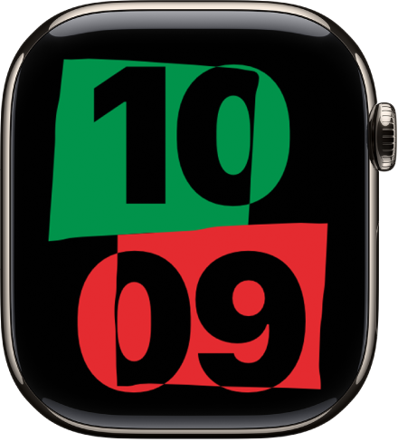

此表盘的灵感源自泛非三色旗的颜色。图案随着你的运动而变化，创造出专属于你的表盘。
下方的文件数包括本地化资源。固件名称键能确认包的归属；组件的圆屏点击边界、亮屏过渡与 AOD 对照均待设备验证。
原始包 已解析属性表 Mach-O 方法与成员 ARM64 汇编 解出的图集
.strings × 44 .car × 1 .plist × 1 无扩展名 × 1
NTKRenegadeFaceBundle.bundleFACE_STYLE_RENEGADE_DETAIL_DESCRIPTIONEDIT_OPTION_LABEL_RENEGADE_COLOR_RED_BLACK_GREEN_GOLDEDIT_OPTION_LABEL_RENEGADE_COLOR_RED_BLACK_GREENEDIT_OPTION_LABEL_RENEGADE_COLOR_BLACK_BLACK色组与设备条件 共享色组与默认值
+[NTKRenegadeColorPalette tritiumPaletteForColor:flipped:];-[NTKRenegadeColorPalette tritiumPalette];-[NTKRenegadeColorPalette _initWithColor:flipped:tritium:];-[NTKRenegadeFaceView _tritium_filterProviderForSlot:];-[NTKRenegadeFaceView tritium_didTransitionToTritiumOff];-[NTKRenegadeFaceView tritium_usesWidgetTransitionPresetColors];-[NTKRenegadeFaceView tritium_createFaceAnimator];-[NTKRenegadeFaceView tritium_transitionToFrameSpecifier:];-[NTKRenegadeFaceView _prepareWristRaiseAnimation];-[NTKRenegadeFaceView _performWristRaiseAnimation];-[NTKRenegadeFaceView _tritium_updateComplicationColors];-[NTKRenegadeFaceView tritium_timeViews];-[NTKRenegadeFaceView tritium_willTransitionToTritiumOnToFrameSpecifier:];-[NTKRenegadeFaceView tritium_willTransitionToTritiumOffFromFrameSpecifier:];-[NTKRenegadeFaceView _tritium_colorsFlippedForDate:];-[NTKRenegadeTimeView tritium_transitionToTritiumOnWithProgress:];-[NTKRenegadeTimeView tritium_transitionToFrameSpecifier:];-[NTKRenegadeTimeView screenWakeDuration];-[NTKRenegadeTimeView _applyScreenWakeDuration];-[NTKRenegadeTimeView tritium_transitionToTritiumOffWithProgress:];-[NTKRenegadeTimeView setScreenWakeDuration:];+[NTKRenegadeBackgroundConfiguration interpolatedConfigurationWithFraction:fromConfiguration:toConfiguration:];-[NTKRenegadeBackgroundView isAnimating];-[NTKRenegadeColorPalette minuteLabelColor];-[NTKRenegadeFaceView tritium_didTransitionToTritiumOff];-[NTKRenegadeFaceView tritium_usesWidgetTransitionPresetColors];-[NTKRenegadeFaceView _applyTransitionFraction:fromOption:toOption:forCustomEditMode:slot:];-[NTKRenegadeFaceView tritium_createFaceAnimator];-[NTKRenegadeFaceView tritium_transitionToFrameSpecifier:];-[NTKRenegadeFaceView _cleanupAfterTransitionComplicationSlot:selectedComplication:];-[NTKRenegadeFaceView _prepareWristRaiseAnimation];-[NTKRenegadeFaceView _performWristRaiseAnimation];-[NTKRenegadeFaceView _configureForTransitionFraction:fromEditMode:toEditMode:];-[NTKRenegadeFaceView tritium_willTransitionToTritiumOnToFrameSpecifier:];-[NTKRenegadeFaceView tritium_willTransitionToTritiumOffFromFrameSpecifier:];-[NTKRenegadeFaceView _usesScaleTransitionForEditModes];-[NTKRenegadeSeededRandomizer floatValueBetweenFirstValue:secondValue:];-[NTKRenegadeSeededRandomizer pointBetweenFirstPoint:secondPoint:];-[NTKRenegadeTimeView applyTransitionFraction:fromPalette:toPalette:];-[NTKRenegadeTimeView _startTimedQuiltAnimation];-[NTKRenegadeTimeView _startTimedQuiltAnimationWithDuration:];-[NTKRenegadeTimeView configurationTransitionFraction];-[NTKRenegadeTimeView tritium_transitionToTritiumOnWithProgress:];-[NTKRenegadeTimeView tritium_transitionToFrameSpecifier:];-[NTKRenegadeTimeView _pauseTimedQuiltAnimation];-[NTKRenegadeTimeView applyTransitionFraction:fromComplicationsEnabled:toComplicationsEnabled:];-[NTKRenegadeTimeView _timedQuiltAnimationLoopEnded];-[NTKRenegadeTimeView screenWakeDuration];-[NTKRenegadeTimeView _applyScreenWakeDuration];-[NTKRenegadeTimeView tritium_transitionToTritiumOffWithProgress:];-[NTKRenegadeTimeView setScreenWakeDuration:];-[NTKRenegadeTimeView setOverrideDate:duration:];-[NTKRenegadeTimeView _resumeTimedQuiltAnimation];+[NTKRenegadeBackgroundConfiguration snapshotConfigurationWithBoundingFrame:complicationEdgeInsets:];-[NTKRenegadeBackgroundView bottomQuiltColor];-[NTKRenegadeBackgroundView setBottomQuiltColor:];-[NTKRenegadeBackgroundView setTopQuiltColor:];-[NTKRenegadeBackgroundView topQuiltColor];+[NTKRenegadeColorEditOption optionWithRenegadeColor:forDevice:];+[NTKRenegadeColorEditOption _snapshotKeyForValue:forDevice:];+[NTKRenegadeColorEditOption _orderedValuesForDevice:];-[NTKRenegadeColorEditOption localizedName];-[NTKRenegadeColorEditOption _valueToFaceBundleStringDict];-[NTKRenegadeColorEditOption color];+[NTKRenegadeColorPalette swatchImageForColor:size:];+[NTKRenegadeColorPalette _redColor];+[NTKRenegadeColorPalette _lightGrayColor];+[NTKRenegadeColorPalette tritiumPaletteForColor:flipped:];+[NTKRenegadeColorPalette _blackColor];+[NTKRenegadeColorPalette _color:withDimming:];+[NTKRenegadeColorPalette _color:withTargetAPL:];+[NTKRenegadeColorPalette _darkGrayColor];+[NTKRenegadeColorPalette _goldColor];+[NTKRenegadeColorPalette _greenColor];+[NTKRenegadeColorPalette _swatchBlackColor];+[NTKRenegadeColorPalette paletteForColor:flipped:];-[NTKRenegadeColorPalette flipped];-[NTKRenegadeColorPalette highlightColor];-[NTKRenegadeColorPalette tritiumPalette];-[NTKRenegadeColorPalette swatchColor];-[NTKRenegadeColorPalette topOverlapColor];-[NTKRenegadeColorPalette _initWithColor:flipped:tritium:];-[NTKRenegadeColorPalette bottomComplicationLabelColor];-[NTKRenegadeColorPalette bottomOverlapColor];-[NTKRenegadeColorPalette bottomPatchColor];-[NTKRenegadeColorPalette dateComplicationLabelColor];-[NTKRenegadeColorPalette flippedPalette];-[NTKRenegadeColorPalette hourLabelColor];-[NTKRenegadeColorPalette minuteLabelColor];-[NTKRenegadeColorPalette topPatchColor];+[NTKRenegadeFace _dateComplicationSlotForDevice:];+[NTKRenegadeFace _complicationSlotDescriptors];+[NTKRenegadeFace _dateComplicationSlotSupportedStylesForDevice:];+[NTKRenegadeFace _orderedComplicationSlots];+[NTKRenegadeFace _defaultSelectedComplicationSlotForDevice:];-[NTKRenegadeFace _localizedNameForComplicationSlot:];-[NTKRenegadeFace _numberOfOptionsForCustomEditMode:slot:];-[NTKRenegadeFace _defaultOptionForCustomEditMode:slot:];-[NTKRenegadeFace _indexOfOption:forCustomEditMode:slot:];-[NTKRenegadeFace _optionAtIndex:forCustomEditMode:slot:];-[NTKRenegadeFaceView _tritium_filterProviderForSlot:];-[NTKRenegadeFaceView tritium_usesWidgetTransitionPresetColors];-[NTKRenegadeFaceView _applyTransitionFraction:fromOption:toOption:forCustomEditMode:slot:];-[NTKRenegadeFaceView layoutSubviews];-[NTKRenegadeFaceView _applyBreathingFraction:forCustomEditMode:slot:];-[NTKRenegadeFaceView _dateComplicationFont];-[NTKRenegadeFaceView _applyOption:forCustomEditMode:slot:];-[NTKRenegadeFaceView _prepareForEditing];-[NTKRenegadeFaceView _cleanupAfterEditing];-[NTKRenegadeFaceView _keylineViewForComplicationSlot:];-[NTKRenegadeFaceView utilityDateComplicationFontForDateStyle:];-[NTKRenegadeFaceView _dateComplicationFrame];-[NTKRenegadeFaceView _fadesComplicationSlot:inEditMode:];-[NTKRenegadeFaceView _configureComplicationView:forSlot:];-[NTKRenegadeFaceView _cleanupAfterTransitionComplicationSlot:selectedComplication:];-[NTKRenegadeFaceView _loadLayoutRules];-[NTKRenegadeFaceView _newLegacyViewForComplication:family:slot:];-[NTKRenegadeFaceView layoutConfigurationForSlot:];-[NTKRenegadeFaceView _tritium_updateComplicationColors];-[NTKRenegadeFaceView textLayoutStyleForSlot:];-[NTKRenegadeFaceView _keylineFrameForComplicationSlot:selected:];-[NTKRenegadeFaceView _complicationsAlphaForEditMode:];-[NTKRenegadeFaceView _applyRubberBandingFraction:forCustomEditMode:slot:];-[NTKRenegadeFaceView _faceEditingCrownScrollMultiplierForEditMode:];-[NTKRenegadeFaceView _swatchImageForColorOption:size:];-[NTKRenegadeFaceView _applyComplicationStyleToView:forComplication:slot:];-[NTKRenegadeFaceView _applyComplicationStyleToView:forSlot:];-[NTKRenegadeFaceView _applyPaletteFraction:fromPalette:toPalette:];-[NTKRenegadeFaceView _areComplicationsEnabled];-[NTKRenegadeFaceView _bottomComplicationFont];-[NTKRenegadeFaceView _tritium_colorsFlippedForDate:];-[NTKRenegadeFaceView _updateComplicationsEnabled];-[NTKRenegadeTimeView applyTransitionFraction:fromPalette:toPalette:];-[NTKRenegadeTimeView setPalette:];-[NTKRenegadeTimeView layoutSubviews];-[NTKRenegadeTimeView complicationsEnabled];-[NTKRenegadeTimeView _coloringLabel];-[NTKRenegadeTimeView applyTransitionFraction:fromComplicationsEnabled:toComplicationsEnabled:];-[NTKRenegadeTimeView setComplicationsEnabled:];-[NTKRenegadeTimeView _layoutTimeLabels];-[NTKRenegadeTimeView complicationsEdgeInsets];-[NTKRenegadeTimeView _nextConfigurationWithComplicationsEnabled:];-[NTKRenegadeTimeView palette];-[NTKRenegadeTimeView _applyTimeLabelFontForComplicationsEnabledWithFraction:];-[NTKRenegadeTimeView _quiltOverallBoundingFrameWithComplicationsEnabled:];-[NTKRenegadeTimeView _nextConfigurationWithComplicationsEnabled:topQuiltPieceOverlapsBottom:];-[NTKRenegadeTimeView setComplicationsEdgeInsets:];+[_NTKRenegadeSwatchStripeDefinition definitionWithColor:height:];-[_NTKRenegadeSwatchStripeDefinition color];